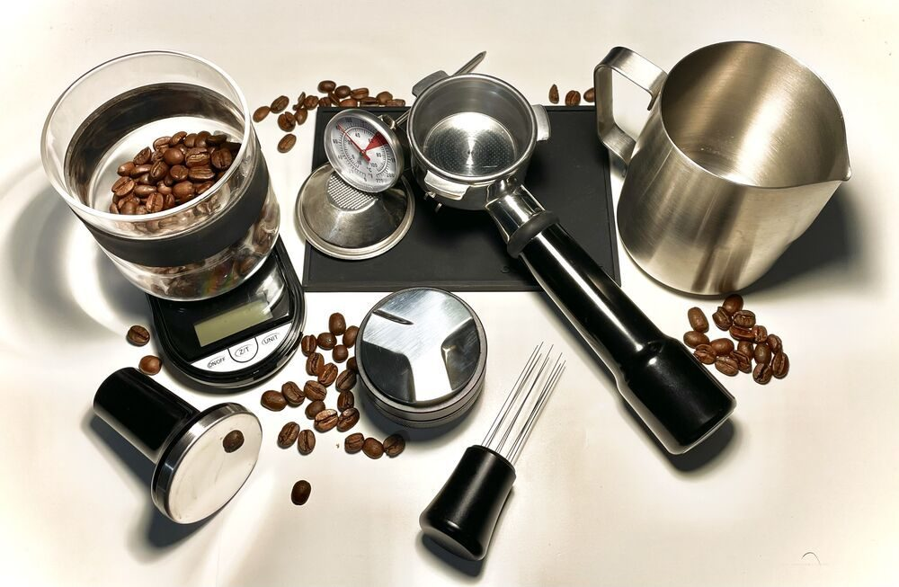

BPM72
店のこと
店のこと
お店について確認できているのは、所在地・電話番号・Instagramのアカウントです。
このページの「想像してみる」部分は、制作側が想像して書いたものです。お店の実際の様子・考え・メニューとは関係がありません。
確認できていること
- 店名は「COCO CAFEココカフェ」、業種はカフェ
- 所在地は静岡県磐田市立野260(〒438-0821)
- 電話番号は0538-31-7212
- Instagramのアカウントは @cococafe1212
- 営業時間・定休日・メニュー・価格・ご予約・駐車場は準備中

想像してみる
強拍と弱拍、ココとココ。
同じ音が二つ並ぶと、一つめを強く、二つめをやさしく言いたくなります。メトロノームの二拍子も、強・弱・強・弱と続きます。制作側はそんなふうに屋号の響きを眺めてみました。店名の由来は分かりませんので、お店の考えとは関係のない連想です。


写真は物や道具のイメージです。お店で使っているものではありません。